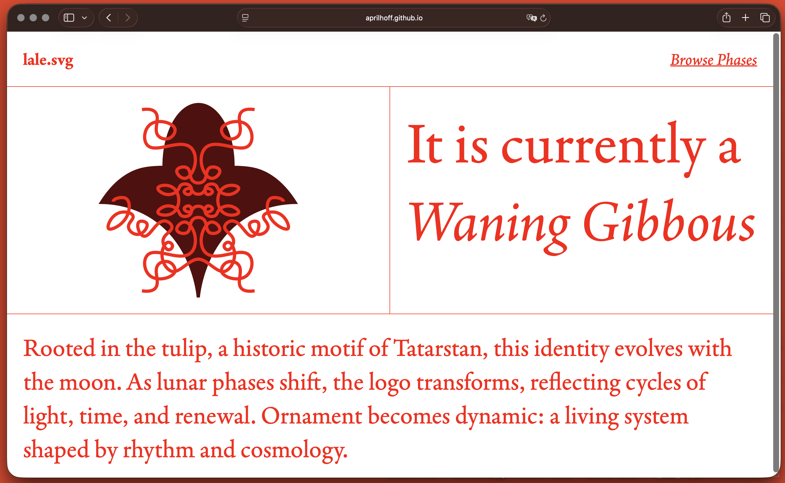
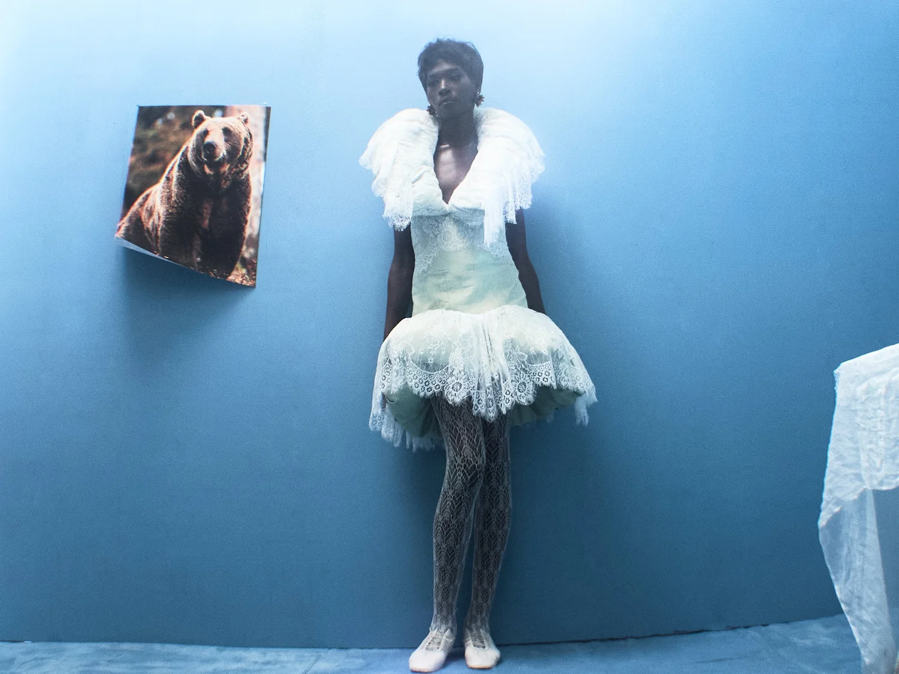
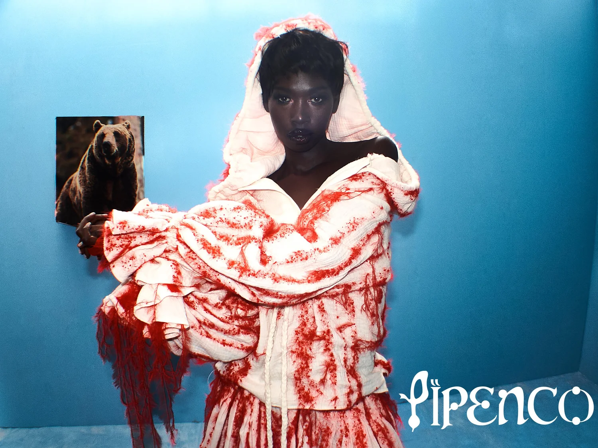
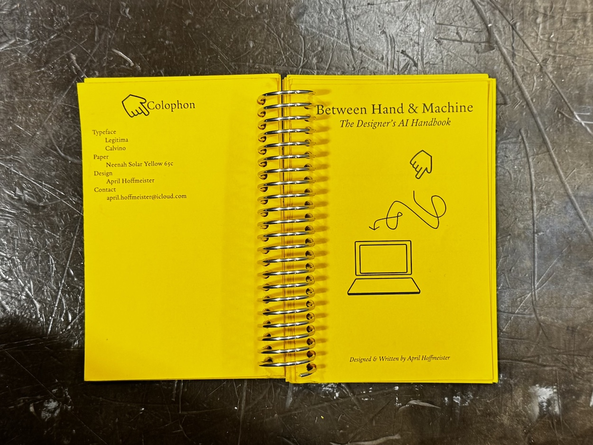
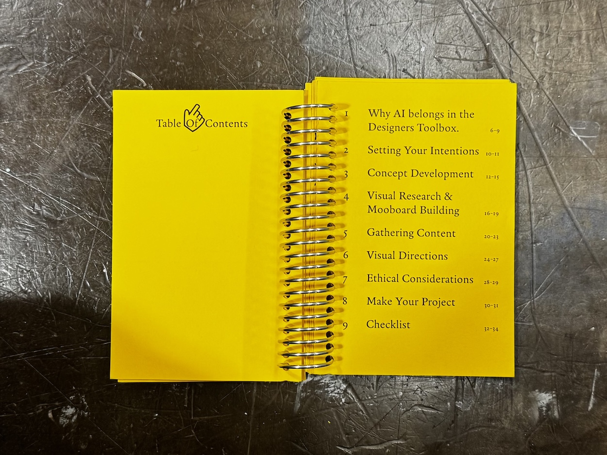
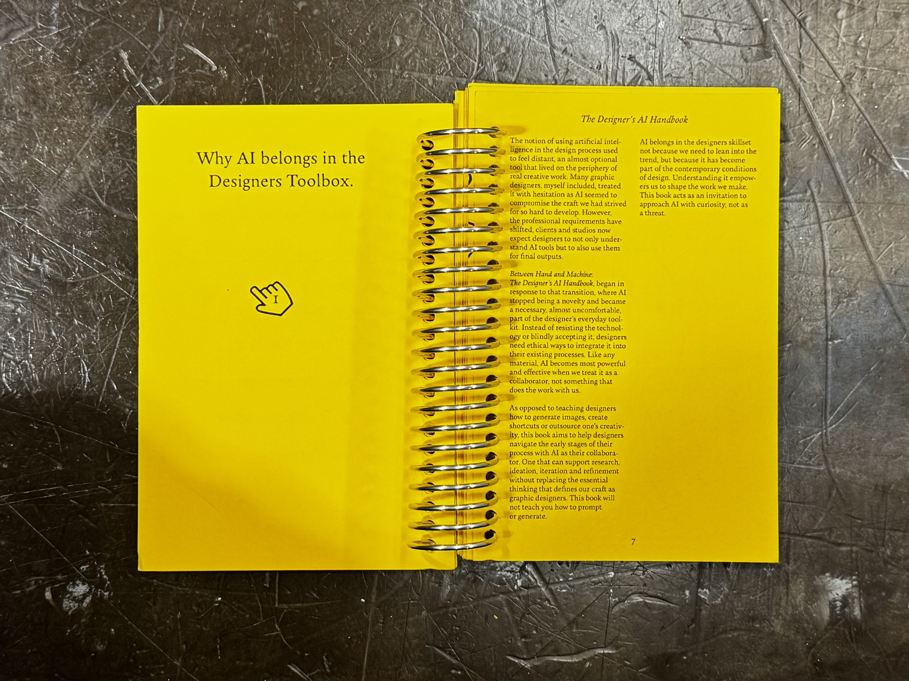
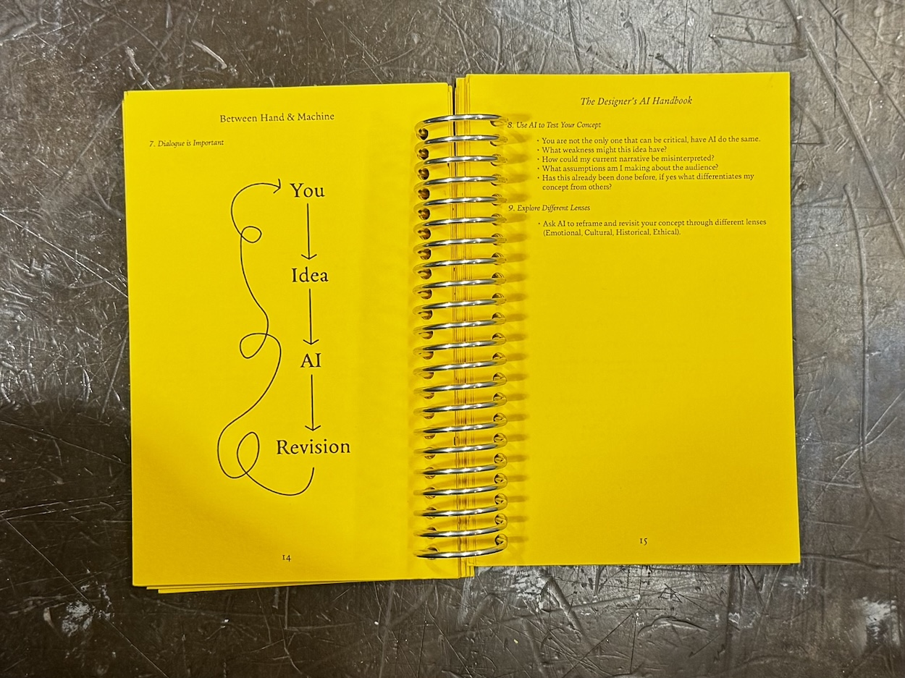
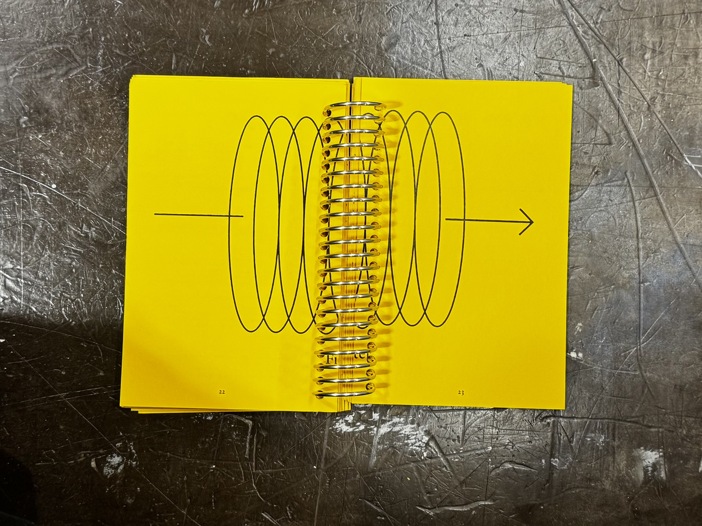
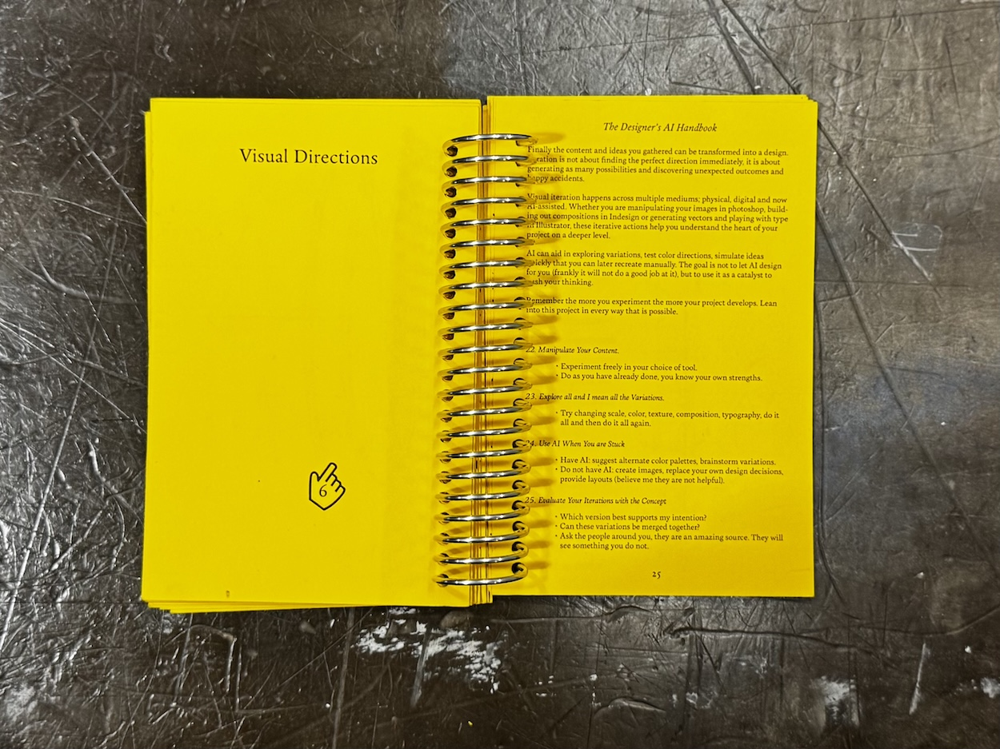

April Hoffmeister
lale - Periodical Logo
takete - Typeface Design
Pipenco
Digitising a photographic archive
Unsent & Unread
Between Hand & Machine
Prototyped
Education
Parsons School of Design, BFA Graphic Design, Expected 2027
Selected Work Experience
Bluepoint Hospitality, Graphic Designer, November 2025 – Present
AIGA TNS, Design Officer, October 2025 – Present
Jung Von Matt, Graphic Design Intern, Summer 2025
Contact
Email
lale - Periodical Logo

Using a real-time API to retrieve the current lunar phase in Tatarstan, I designed a dynamic logo system that evolves in sync with the moon’s cycle.
Visit Websitetakete - Typeface Design

Typespecimen designed for takete, a WIP sans/sans serif typeface made in Glyphs.
Pipenco


AI assisted posters generated for Pipenco's SS26 campaign shoot.
W Magazine ArticlePipenco SS26
Digitising a photographic archive


Around three years ago I began digitising my family's photographic archive. Slowly with every holiday break more and more photos became a part of my folder. Aiming to materialise and give purpose to my process of digitisation I began to experiment with different ways of displaying these images.
Unsent & Unread


What began as an observation of the unsent & unread has turned into an act of preservation. By revisiting the mailbox not as a relic, but as an integral communicative system, I have come to understand that the physical needs to be reintroduced. This project does not honor the memory of the mailbox, but acts as an invitation to hold onto words.
Between Hand & Machine






As artificial intelligence becomes increasingly present in creative industries, designers are being pushed to apply it to their practice. In graphic design, AI has begun to be a part of all stages within a project, especially the early stages of research, visual exploration and conceptual ideation. These phases within any creative process are foundation to the final output, where the biases of designers, their intuitions and personal taste emerge most often. When AI begins to aid in the early stages of design, subtle shifts can occur where the influence of intention and originality can be skewed. Aiming to negate these shifts, I designed and wrote a framework that helps designers critically engage with AI tools while maintaining their human touch.
Prototyped
Prototyped is an ongoing online anthology of design works shared and collected amongst its community.
visit website

last updated: January 2026